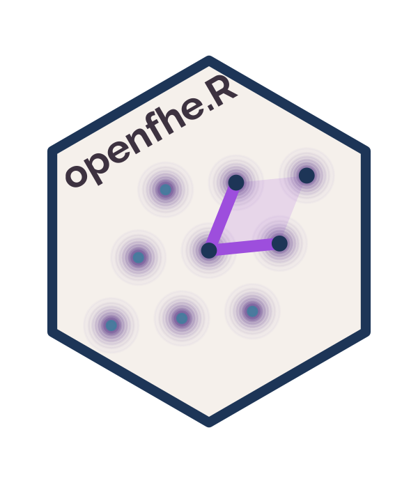

Evaluate sign on an encrypted value (functional bootstrapping)
Source:R/binfhe.R
eval_sign.RdExtracts the most-significant bit of an LWE ciphertext encrypted
under the large modulus Q. The context must have been created with
arb_func = TRUE.
Arguments
- ctx
A BinFHE context built with
arb_func = TRUE- ct
An LWECiphertext encrypted via
bin_encrypt(..., mod = Q)- scheme_switch
Logical; when
TRUE, the output ciphertext is encoded compatibly with the CKKS<->FHEW scheme-switching pipeline (theschemeSwitchflag atbinfhecontext.hline 367). DefaultFALSEfor the standalone FHEW path. Per the upstream header description, this is the "flag that indicates if it should be compatible to scheme switching".